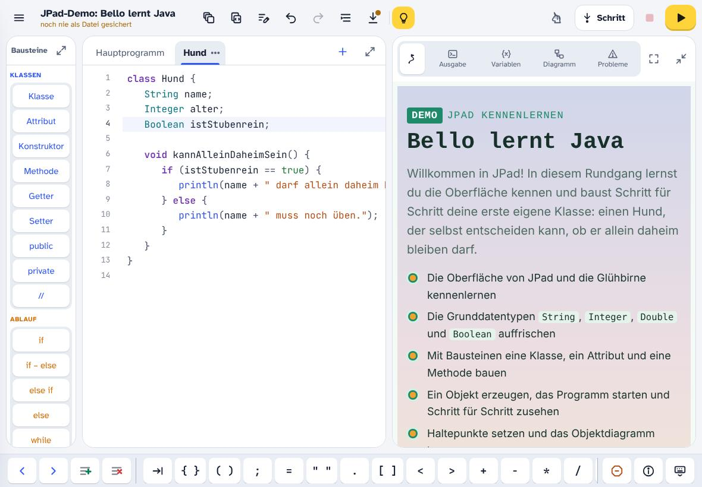
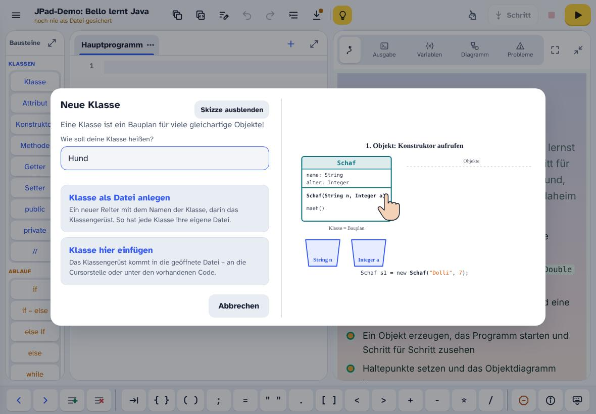
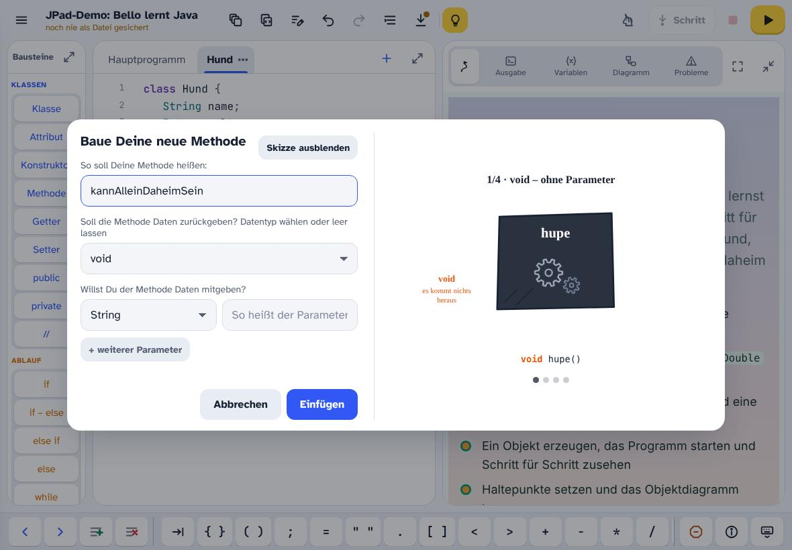
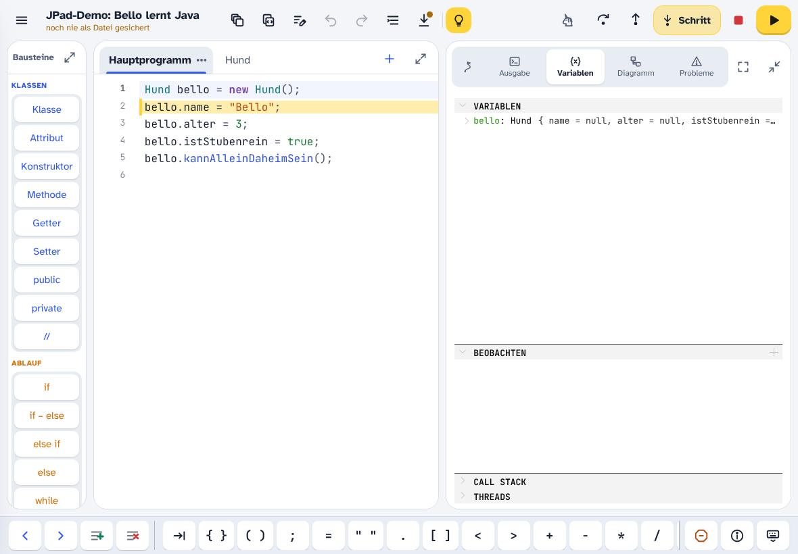
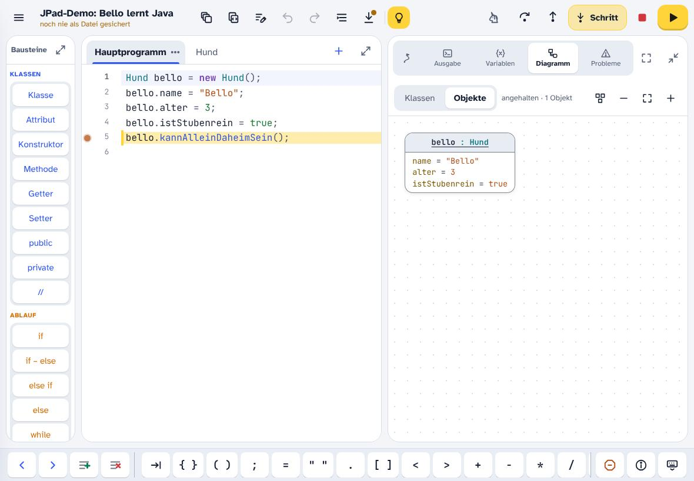

Das ist JPad
JPad ist eine Werkstatt für Java, gebaut für das iPad. Du schreibst Code, ohne viel tippen zu müssen, und siehst sofort, was dein Programm tut. Tippe auf die Nummern im Bild:

Tippe auf eine Nummer.
Oben in der Kopfzeile leuchtet eine gelbe Glühbirne. Sie erinnert dich an den wichtigsten Trick in JPad:
Weißt du nicht, was ein Knopf tut? Lege einfach eine halbe Sekunde lang den Finger darauf.
Dann erscheint eine Hilfe, und der Knopf wird nicht ausgelöst. Das klappt bei jedem Knopf und jedem Baustein. Bei den Bausteinen bekommst du sogar eine große Hilfe mit Beispielen.
a) Tippe in JPad auf die Glühbirne. Was steht in dem Hinweis?
b) Lege den Finger eine halbe Sekunde auf den Baustein Klasse links. Was erklärt dir JPad?
Lösung anzeigen
Welcher Datentyp passt?
Jede Variable in Java hat einen Datentyp. Er legt fest, welche Werte hineinpassen. Für den Anfang brauchst du vier:
StringText in Anführungszeichen"Bello"Integerganze Zahl3DoubleKommazahl, mit Punkt geschrieben12.5BooleanWahrheitswerttrue / falseWeißt du, welcher Datentyp passt? Tippe auf die Antwort, die du für richtig hältst:
Die Klasse Hund
Eine Klasse ist ein Bauplan. Sie legt fest, welche Eigenschaften (Attribute) und Fähigkeiten (Methoden) alle Objekte dieser Art haben. Jeder Hund hat einen Namen und ein Alter. Das sind die ersten beiden Attribute:
- Tippe oben auf Kopieren.
- Tippe in JPad links auf den Baustein Klasse.
- Gib als Namen
Hundein, mit großem H. Klassennamen beginnen immer mit einem Großbuchstaben. - Tippe auf Klasse als Datei anlegen. Oben erscheint ein neuer Reiter Hund mit dem Klassengerüst. Der Cursor blinkt schon in der leeren Zeile zwischen den geschweiften Klammern.
- Halte den Finger in diese leere Zeile und wähle Einsetzen.

So sieht deine Datei Hund danach aus:
JPad rückt den Code beim Einfügen von Bausteinen automatisch ein. Sieht dein Code trotzdem einmal unordentlich aus, tippe oben auf Code formatieren.
Ist Bello stubenrein?
Ob ein Hund allein daheim bleiben darf, hängt davon ab, ob er stubenrein ist. Dafür bekommt die Klasse ein drittes Attribut. Diesmal ohne Kopieren, mit dem Baustein:
- Tippe links auf den Baustein Attribut.
- Wähle als Datentyp
Boolean. Ein Hund ist entweder stubenrein (true) oder nicht (false). - Gib als Namen
istStubenreinein und tippe auf Einfügen.
JPad setzt das neue Attribut unter die anderen Attribute, egal wo der Cursor gerade steht:
Warum heißt das Attribut istStubenrein und nicht einfach stubenrein?
Lösung anzeigen
Boolean wie eine Ja-Nein-Frage: Ist Bello stubenrein? – true. Das macht den Code leichter lesbar. Namen von Attributen beginnen immer mit einem Kleinbuchstaben, jedes weitere Wort mit einem Großbuchstaben.Was ist eine Methode?
Attribute beschreiben, was ein Hund hat. Methoden beschreiben, was ein Hund kann. Eine Methode ist ein Stück Code mit einem Namen. Ruft man sie auf, wird ihr Code ausgeführt.
Eine Methode hat einen Kopf und einen Rumpf in geschweiften Klammern. Tippe auf die Teile des Methodenkopfs:
Tippe auf ein Teil.
Unsere Methode soll prüfen, ob der Hund stubenrein ist, und das Ergebnis ausgeben. Dafür braucht sie eine Verzweigung mit if und else: Wenn die Bedingung wahr ist, läuft der erste Teil, sonst der zweite.
Die Methode bauen
Jetzt baust du die Methode in der Klasse Hund, Baustein für Baustein. Achte darauf, dass der Reiter Hund geöffnet ist.
- Tippe auf den Baustein Methode. Es öffnet sich der Dialog „Baue Deine neue Methode“.
- Gib als Namen
kannAlleinDaheimSeinein. Bei der Frage nach der Rückgabe bleibtvoidstehen. Parameter brauchst du keine, lass das Feld „So heißt der Parameter“ also leer. Tippe auf Einfügen. - Die leere Methode steht jetzt am Ende der Klasse, der Cursor blinkt in ihrem Rumpf. Tippe auf den Baustein if – else.
- Das Wort
Bedingungist markiert. Tippe einfach los und ersetze es durchistStubenrein == true. - Platziere jetzt mit Finger, Maus oder Tastatur den Cursor im Rumpf der if-Anweisung (also innerhalb der geschweiften Klammern).
- Tippe auf den Baustein println und schreibe in die Klammern:
name + " darf allein daheim bleiben." - Platziere den Cursor genauso im Rumpf von
else, also in der leeren Zeile zwischen} else {und}. - Noch einmal println, diesmal mit
name + " muss noch üben."

Wenn alles geklappt hat, sieht deine Klasse so aus. Vergleiche genau, oder kopiere die Lösung, falls etwas schiefgegangen ist:
JPad prüft deinen Code schon beim Schreiben. Eine rote Wellenlinie zeigt einen Fehler. Was nicht stimmt, siehst du rechts in der Ansicht Probleme. Tippst du dort auf einen Fehler, springt JPad an die richtige Stelle.
Bello wird gebaut
Die Klasse ist nur der Bauplan. Damit es einen echten Hund gibt, musst du ein Objekt erzeugen. Das passiert im Hauptprogramm, dem Reiter ganz links.
- Tippe oben auf den Reiter Hauptprogramm.
- Tippe auf den Baustein Variable. Wähle unter Eigene Klassen den Datentyp
Hundund gib den Namenbelloein. - Unter Verfügbare Konstruktoren ist schon
new Hund()ausgewählt. Die Klasse hat keinen eigenen Konstruktor, deshalb gibt es nur diesen Standardkonstruktor. Unten zeigt die Vorschau, was eingefügt wird:Hund bello = new Hund();Tippe auf Einfügen. Erst jetzt gibt es Bello wirklich. - Kopiere die folgenden Zeilen und setze sie in eine neue Zeile darunter ein. Sie füllen Bellos Attribute und rufen seine Methode auf.
Starte dein Programm mit ▶ oben rechts.
Beim Start schaltet JPad die rechte Ansicht auf Ausgabe, damit du sofort siehst, was dein Programm schreibt. Der Lernpfad ist nicht weg, er liegt nur dahinter.
- iPad quer: Tippe rechts oben auf den ersten Reiter mit dem Wegweiser-Symbol .
- iPad hochkant: Tippe unten in der Leiste auf Lernpfad, und mit Code kommst du zurück zum Editor.
In der Ausgabe sollte stehen:
Bello darf allein daheim bleiben.a) Ändere im Hauptprogramm true in false und starte noch einmal. Was gibt Bello jetzt aus?
Lösung anzeigen
Bello muss noch üben. Die Bedingung istStubenrein == true ist jetzt falsch, deshalb läuft der else-Teil.b) Lege einen zweiten Hund wuffi an, der 1 Jahr alt und nicht stubenrein ist, und lass auch ihn antworten.
Lösung anzeigen
Beide Hunde wurden nach demselben Bauplan gebaut, haben aber eigene Werte. Deshalb antworten sie verschieden.
Schritt für Schritt
Mit ▶ läuft dein Programm in einem Rutsch durch. Mit dem Knopf Schritt kannst du ihm dagegen beim Arbeiten zusehen, Zeile für Zeile.
- Wechsle rechts zur Ansicht Variablen.
- Tippe oben auf Schritt. Das Programm startet und hält sofort vor der ersten Zeile an. Diese Zeile ist gelb markiert: Sie ist als Nächstes dran.
- Tippe weiter auf Schritt und beobachte die Ansicht Variablen: Erst taucht
belloauf, dann bekommt er nach und nach seinen Namen, sein Alter undistStubenrein. - Bei
bello.kannAlleinDaheimSein();springt JPad mit dem nächsten Schritt in den Reiter Hund, direkt in die Methode. Du siehst, welcher Teil der Verzweigung ausgeführt wird.

null (leer).Solange das Programm angehalten ist, erscheinen neben Schritt zwei weitere Knöpfe: Methode überspringen führt einen Methodenaufruf in einem einzigen Schritt aus, Methode verlassen läuft bis zum Ende der aktuellen Methode. Mit ■ beendest du das Programm. Und weißt du nicht mehr, welcher Knopf was macht? Finger drauflegen!
Bello im Objektdiagramm
Bei langen Programmen dauert es, mit Schritt bis zur spannenden Stelle zu kommen. Dafür gibt es Haltepunkte: Das Programm läuft normal los und hält erst an der markierten Zeile an.
- Tippe im Hauptprogramm auf die Zeilennummer der Zeile
bello.kannAlleinDaheimSein();. Links neben der Nummer erscheint ein oranger Punkt: Hier ist jetzt ein Haltepunkt. Alternativ setzt du den Cursor in die Zeile und tippst in der Hilfsleiste auf . - Öffne rechts die Ansicht Diagramm und tippe oben auf Objekte.
- Starte mit ▶. Das Programm hält vor der markierten Zeile an.
- Im Objektdiagramm siehst du jetzt Bello als Karte: oben
bello : Hund, darunter alle Attribute mit ihren Werten.

a) Tippe im Diagramm oben auf Klassen. Was ist der Unterschied zur Ansicht Objekte?
Lösung anzeigen
Hund mit ihren Attributen, deren Datentypen und der Methode. Das Objektdiagramm zeigt die gebauten Objekte mit ihren aktuellen Werten. Von einer Klasse kann es viele Objekte geben.b) Hast du in Station 7 auch Wuffi angelegt? Setze den Haltepunkt ans Ende des Programms. Wie viele Karten zeigt das Objektdiagramm?
Lösung anzeigen
bello : Hund und wuffi : Hund. Jedes new baut genau ein Objekt.Einen Haltepunkt entfernst du, indem du noch einmal auf die Zeilennummer tippst.
Das Wichtigste in vier Fragen
- Umbenennen (der Stift neben Rückgängig): Gefällt dir ein Name nicht mehr, ändert JPad ihn überall im Projekt auf einmal.
- Projekt sichern (der Pfeil nach unten): Speichert dein Projekt als Datei, zum Beispiel in deinem ByCS-Ordner. Ein Punkt am Pfeil zeigt, dass es noch ungesicherte Änderungen gibt.